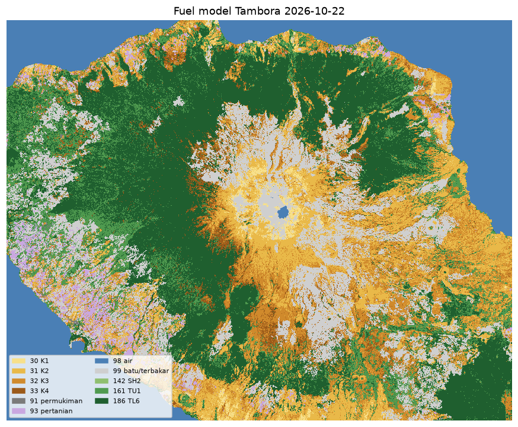

Simulasi API Tambora
Pendamping FlamMap/FARSITE untuk savana TN Tambora: landscape diperbarui tiap minggu dari Sentinel-2, fuel savana terkalibrasi (fmd20), dan cuaca per jam dari ERA5/ECMWF.
Landscape terbaru
Memuat…

Alat
- Pembuat file angin/cuaca .WXS (ERA5 / ECMWF lewat Open-Meteo)
- Simulasi api di peta: klik titik api, pilih FARSITE/MTT dan metode api tajuk, lihat dan unduh hasilnya.
- Bisa juga dari tab Actions → Simulasi api di repo GitHub. Hasil juga disimpan ke Google Drive folder
simulasi/.